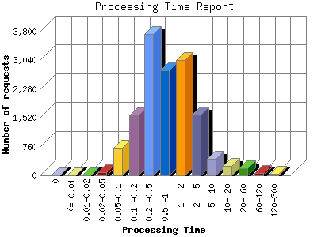

The Processing Time report shows the time it took for your server (or your host's server) to process each request. The processing time is listed in seconds with a theoretical accuracy of milliseconds. Note if your processing time appears to be about 100-times too long, then you are probably hosted on an IIS system that reports in 100th second intervals rather than second intervals.

| Processing Time | Number of requests | |
|---|---|---|
| 1. | 0 | 4 |
| 2. | <= 0.01 | 0 |
| 3. | 0.01-0.02 | 8 |
| 4. | 0.02-0.05 | 78 |
| 5. | 0.05-0.1 | 724 |
| 6. | 0.1 -0.2 | 1,587 |
| 7. | 0.2 -0.5 | 3,728 |
| 8. | 0.5 -1 | 2,773 |
| 9. | 1- 2 | 3,045 |
| 10. | 2- 5 | 1,618 |
| 11. | 5- 10 | 434 |
| 12. | 10- 20 | 250 |
| 13. | 20- 60 | 190 |
| 14. | 60-120 | 58 |
| 15. | 120-300 | 50 |
This report was generated on November 19, 2013 03:20.
Report time frame September 17, 2012 00:01 to November 18, 2013 23:27.
| Web statistics report produced by: analog 5.1 / Report Magic 2.21 |